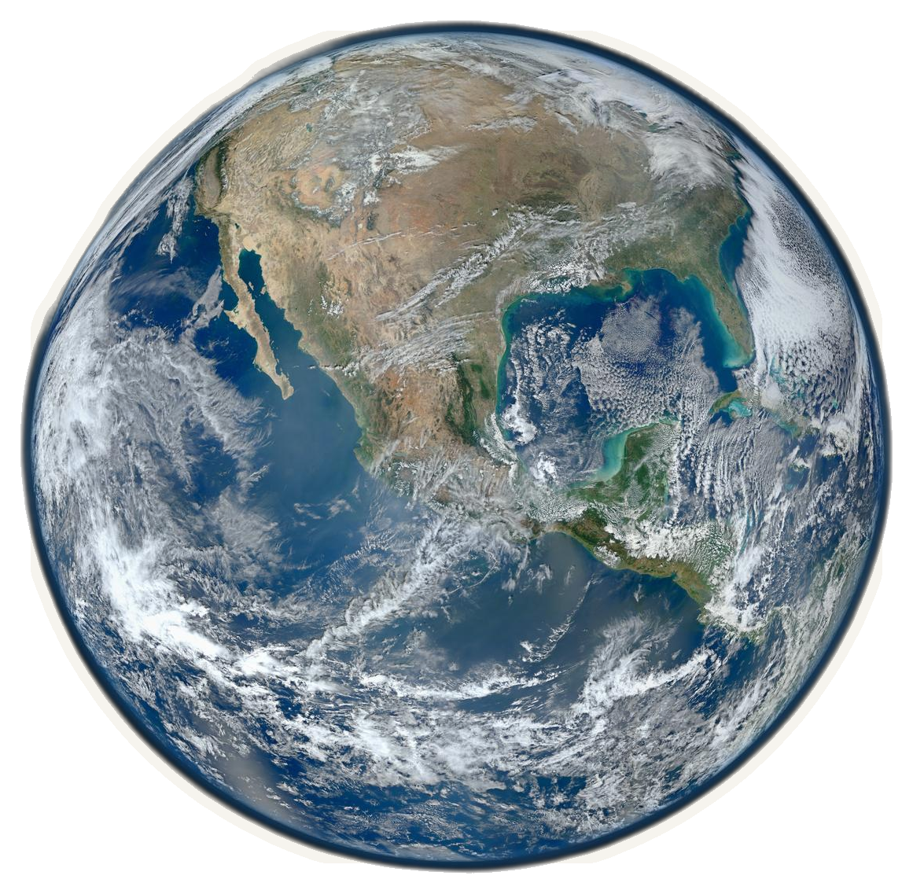
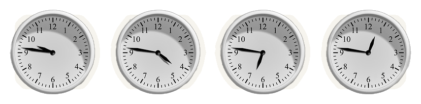
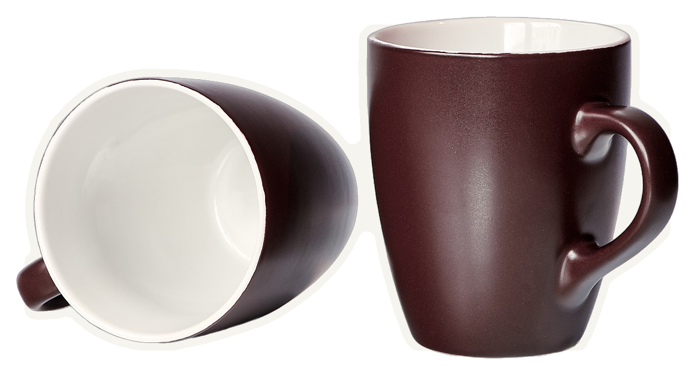

2010 · АСПИРАНТКА
Сара Бёрк-Сполар
прочесала архивы Parkes
16
сигналов с той же дугой

David McClenaghan, CSIRO · CC BY 3.0
13 «УШЕЙ»
многолучевой приёмник Parkes — 13 лучей
НАСТОЯЩИЙ ДАЛЁКИЙ ИСТОЧНИК
ЭТИ ШЕСТНАДЦАТЬ
одинаково во всех 13 → источник рядом
1–3 соседних луча → источник далеко
ЭТО ЛОВУШКА!
видео: NASA, МКС


ЗЕМЛЯ
Подожди, это всё Земля?
Всегда была
МЕМ перитон — крылатый олень
перитон — крылатый оленьПЕРИТОНЫ

ApJ 727:18 · Burke-Spolaor et al. · 2011
«Радиовсплески с внегалактическими признаками показывают земное происхождение»

ВСПЛЕСК ЛОРИМЕРА · 2001

ПЕРИТОН · ЗЕМЛЯ
НАСТОЯЩАЯ ДРАМА
ГДЕ ГАРАНТИЯ?
0
перитонов к 2015 году
?
?
?
статьи с разными версиями
FRB — НАСТОЯЩИЕ?

обед!
MNRAS 451:3933 · рис. 7 · перитоны по местному времени

обеденный час · фильм «The City», 1939
ЗВЁЗДЫ НЕ ЗНАЮТ
ПРО ОБЕД
ПРО ОБЕД

12:00 · обеденный перерыв · NSW


КАФЕ ОБСЕРВАТОРИИ · ВЫХОДНЫЕ
5
перитонов в выходные

«это кто-то из нас»
убедительно, но не железно
B · НАУКА ИЗНУТРИ · 01